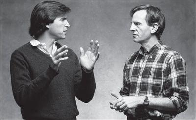

With John Sculley, 1984
Mike Markkula had never wanted to be Apple’s president. He liked designing his new houses, flying his private plane, and living high off his stock options; he did not relish adjudicating conflict or curating high-maintenance egos. He had stepped into the role reluctantly, after he felt compelled to ease out Mike Scott, and he promised his wife the gig would be temporary. By the end of 1982, after almost two years, she gave him an order: Find a replacement right away.
迈克·马库拉从来就没想过要当苹果公司的总裁。他喜欢设计自己的新房子，驾驶自己的私人飞机，靠股票期权过着豪华的生活；他并不喜欢裁决纠纷，也不喜欢领导一群很难伺候的自我主义者。他之前被迫赶走了迈克·斯科特，然后很不情愿地当上了总裁，他答应过妻子，这份差事只是暂时的。到1982年底，马库拉已经在这个职位上干了差不多两年，妻子给他下了最后通牒：马上寻找接班人。
Jobs knew that he was not ready to run the company himself, even though there was a part of him that wanted to try. Despite his arrogance, he could be self-aware. Markkula agreed; he told Jobs that he was still a bit too rough-edged and immature to be Apple’s president. So they launched a search for someone from the outside.
乔布斯知道自己还没有能力管理公司，虽然他跃跃欲试。乔布斯很髙傲，但他还是有自知之明的。马库拉也赞成乔布斯的想法。他告诉乔布斯，要担任苹果公司的总裁，他还稍显毛矂、不成熟。于是，他们开始在公司外寻找合适的人选。
The person they most wanted was Don Estridge, who had built IBM’s personal computer division from scratch and launched a PC that, even though Jobs and his team disparaged it, was now outselling Apple’s. Estridge had sheltered his division in Boca Raton, Florida, safely removed from the corporate mentality of Armonk, New York. Like Jobs, he was driven and inspiring, but unlike Jobs, he had the ability to allow others to think that his brilliant ideas were their own. Jobs flew to Boca Raton with the offer of a $1 million salary and a $1 million signing bonus, but Estridge turned him down. He was not the type who would jump ship to join the enemy. He also enjoyed being part of the establishment, a member of the Navy rather than a pirate. He was discomforted by Jobs’s tales of ripping off the phone company. When asked where he worked, he loved to be able to answer “IBM.”
他们最中意的人是唐·埃斯特里奇（DonEstridge）,他白手起家，创建了IBM的个人电脑部门，并且开创了这条产品线。尽管乔布斯及其团队对此不屑一顾，但如今其销售量已经超过了苹果。埃斯特里奇为保护其团队免受纽约州阿蒙克市IBM总部企业文化的影响，将其公司设立在佛罗里达州的博卡拉顿。和乔布斯一样，埃斯特里奇富有上进心，能启发灵感，才思敏捷，还有一点儿叛逆。而和乔布斯不同的是，他能够让别人觉得他的一些绝妙想法也是他们的。乔布斯飞到博卡拉顿，开出了100万美元薪水外加100万美元签约奖金的条件，但是埃斯特里奇拒绝了他。±矣斯特里奇不是那种会投敌的人，而且，他也愿意做机构的一部分，喜欢做海军，而不是海盗。乔布斯讲述的当年用蓝盒子盗打电话的故事，让埃斯特里奇觉得很不舒服。当别人问起他在哪儿工作时，他喜欢那种说出“IBM”这个名字的感觉。
So Jobs and Markkula enlisted Gerry Roche, a gregarious corporate headhunter, to find someone else. They decided not to focus on technology executives; what they needed was a consumer marketer who knew advertising and had the corporate polish that would play well on Wall Street. Roche set his sights on the hottest consumer marketing wizard of the moment, John Sculley, president of the Pepsi-Cola division of PepsiCo, whose Pepsi Challenge campaign had been an advertising and publicity triumph. When Jobs gave a talk to Stanford business students, he heard good things about Sculley, who had spoken to the class earlier. So he told Roche he would be happy to meet him.
于是，乔布斯和马库拉找来社交广泛的企业猎头格里·罗齐（GerryRoche）,帮他们另择人选。他们决定不局限在科技髙管这个圈子里。他们需要的是一位懂得广告宣传和市场研究的消费产品营销专家，得有大企业人士的风范，能在华尔街吃得开。罗齐将目光锁定在当时最红的消费产品营销奇才、百事公司百事可乐部门总裁约翰·斯卡利（JohnSculley）的身上，他的百事挑战（PepsiChallenge）系列推广活动在广告宣传方面曾经取得了巨大的胜利。乔布斯在给斯坦福大学商学院的学生们演讲时，听到了一些关于斯卡利的好话，斯卡利之前也曾在这个班做过演讲。于是乔布斯告诉罗齐他很乐意见见斯卡利。
Sculley’s background was very different from Jobs’s. His mother was an Upper East Side Manhattan matron who wore white gloves when she went out, and his father was a proper Wall Street lawyer. Sculley was sent off to St. Mark’s School, then got his undergraduate degree from Brown and a business degree from Wharton. He had risen through the ranks at PepsiCo as an innovative marketer and advertiser, with little passion for product development or information technology.
斯卡利的背景和乔布斯很不一样。他的母亲是曼哈顿上东区一位很有身份的夫人，·出门会戴上白手套！他的父亲是一位体面的华尔街律师。斯卡利被送到圣马克学校读书，后来在布朗大学（BrownUniversity）获得了本科学位，在沃顿商学院获得了商学学位。作为一名富有创新力的营销和广告专家，他在百事公司步步高升，但对产品开发和信息技术却没有什么热情。
Sculley flew to Los Angeles to spend Christmas with his two teenage children from a previous marriage. He took them to visit a computer store, where he was struck by how poorly the products were marketed. When his kids asked why he was so interested, he said he was planning to go up to Cupertino to meet Steve Jobs. They were totally blown away. They had grown up among movie stars, but to them Jobs was a true celebrity. It made Sculley take more seriously the prospect of being hired as his boss.
斯卡利为了看望他和前妻所生的两个十几岁的孩子，飞到洛杉矶过圣诞节。他带孩子们去了一家电脑商店，那里的产品营销之糟糕让斯卡利觉得非常惊讶。孩子们问他为什么这么感兴趣，他说他正打算北上库比蒂诺会见史蒂夫·乔布斯。孩子们惊叹不已。尽管是在电影明星聚居地长大的，但对他们来说，乔布斯才是真正的名人。这让斯卡利对于去苹果公司担任乔布斯老板的事情格外上心。
When he arrived at Apple headquarters, Sculley was startled by the unassuming offices and casual atmosphere. “Most people were less formally dressed than PepsiCo’s maintenance staff,” he noted. Over lunch Jobs picked quietly at his salad, but when Sculley declared that most executives found computers more trouble than they were worth, Jobs clicked into evangelical mode. “We want to change the way people use computers,” he said.
斯卡利初到苹果公司总部时，那里平实的办公室和轻松的氛围让他大吃一惊。“大多数人都穿着随意，甚至没有百事公司的维护人员正式。”他说道。午餐时，乔布斯静静地拨弄着盘子里的沙拉，但当斯卡利声称大多数主管都觉得计算机带来的麻烦比用处多的时候，乔布斯突然用一种传道士的口吻说：“我们想要改变人们使用计算机的方式。”
On the flight home Sculley outlined his thoughts. The result was an eight-page memo on marketing computers to consumers and business executives. It was a bit sophomoric in parts, filled with underlined phrases, diagrams, and boxes, but it revealed his newfound enthusiasm for figuring out ways to sell something more interesting than soda. Among his recommendations: “Invest in in-store merchandizing that romances the consumer with Apple’s potential to enrich their life!” He was still reluctant to leave Pepsi, but Jobs intrigued him. “I was taken by this young, impetuous genius and thought it would be fun to get to know him a little better,” he recalled.
在回程的飞机上，斯卡利理了理自己的想法，最后写出了一份长达8页的备忘录，内容关于向消费者和企业主管推销电脑。这份备忘录里的一些内容虽然还很筒单——里面全是加了下划线的短语、图表和方框，但是它意味着斯卡利对设法销售比汽水更有意思的东西产生了热情。他的建议里有这样一条：“投资店内营销，让顾客知道苹果公司的产品有丰富他们生活的潜力，从而吸引顾客。”（他喜欢使用下划线。）他仍然不愿离开百事，但是乔布斯激起了他的兴趣。“我被这位年轻的、急性子的天才征服了，我觉得更深入地了解他将会很有意思。”他回忆说。
So Sculley agreed to meet again when Jobs next came to New York, which happened to be for the January 1983 Lisa introduction at the Carlyle Hotel. After the full day of press sessions, the Apple team was surprised to see an unscheduled visitor come into the suite. Jobs loosened his tie and introduced Sculley as the president of Pepsi and a potential big corporate customer. As John Couch demonstrated the Lisa, Jobs chimed in with bursts of commentary, sprinkled with his favorite words, “revolutionary” and “incredible,” claiming it would change the nature of human interaction with computers.
因此，斯卡利同意在乔布斯下次来纽约的时候再次同他会面，而那天恰好是1983年1月在卡莱尔酒店举行丽萨电脑发布会的时候。一整天的记者会后，苹果公司的人惊奇地发现一位意外造访的客人。乔布斯松了松领带，向大家介绍了斯卡利，称他为百事公司的总裁和一位潜在的大公司客户。在约翰·库奇展示丽萨电脑的时候，乔布斯时不时地突然插进来补充评论，频繁地称赞丽萨在改变人机互动的本质方面具有“革命性”且“不可思议”，这是他最喜欢的两个词。
They then headed off to the Four Seasons restaurant, a shimmering haven of elegance and power. As Jobs ate a special vegan meal, Sculley described Pepsi’s marketing successes. The Pepsi Generation campaign, he said, sold not a product but a lifestyle and an optimistic outlook. “I think Apple’s got a chance to create an Apple Generation.” Jobs enthusiastically agreed. The Pepsi Challenge campaign, in contrast, focused on the product; it combined ads, events, and public relations to stir up buzz. The ability to turn the introduction of a new product into a moment of national excitement was, Jobs noted, what he and Regis McKenna wanted to do at Apple.
接着，他们前往四季餐厅。这家餐厅由密斯·凡德罗和菲利普·约翰逊（PhilipJohnson）设计，优雅与力量并存，恍若人间天堂。乔布斯一边吃着特制的素食，一边听斯卡利介绍百事公司在营销方面取得的成功。斯卡利说，“百事新一代”（PepsiGeneration）营销活动销售的不仅是一种产品，而且是一种生活方式和乐观的人生态度，“我觉得苹果公司有机会创造‘苹果新一代’”。乔布斯热情地赞同了斯卡利的说法。另一方面，“百事挑战”宣传活动旨在聚焦产品，结合广告、活动和公关来造势。乔布斯说，发布一款新产品能引起举国沸腾，正是他和里吉斯·麦肯纳希望苹果公司能做到的。
When they finished talking, it was close to midnight. “This has been one of the most exciting evenings in my whole life,” Jobs said as Sculley walked him back to the Carlyle. “I can’t tell you how much fun I’ve had.” When he finally got home to Greenwich, Connecticut, that night, Sculley had trouble sleeping. Engaging with Jobs was a lot more fun than negotiating with bottlers. “It stimulated me, roused my long-held desire to be an architect of ideas,” he later noted. The next morning Roche called Sculley. “I don’t know what you guys did last night, but let me tell you, Steve Jobs is ecstatic,” he said.
当他们结束谈话的时候，已经接近午夜了。“这是我一生中最兴奋的一个夜晚，”在斯卡利陪他回到卡莱尔酒店的路上，乔布斯说道，“你不知道我有多开心。”当斯卡利最终回到康涅狄格州格林尼治的家中时，他难以入睡。跟乔布斯打交道要比跟装瓶工谈判有趣多了。“它剌激了我，唤起了我心中压抑已久的，成为一名思想建筑师的愿望。”他后来说道。第二天早晨，罗齐给斯卡利打电话说：“我不知道你们昨晚都干了些什么，但是我告诉你，史蒂夫·乔布斯可髙兴坏了。”
And so the courtship continued, with Sculley playing hard but not impossible to get. Jobs flew east for a visit one Saturday in February and took a limo up to Greenwich. He found Sculley’s newly built mansion ostentatious, with its floor-to-ceiling windows, but he admired the three hundred-pound custom-made oak doors that were so carefully hung and balanced that they swung open with the touch of a finger. “Steve was fascinated by that because he is, as I am, a perfectionist,” Sculley recalled. Thus began the somewhat unhealthy process of a star-struck Sculley perceiving in Jobs qualities that he fancied in himself.
求贤之旅仍在继续，斯卡利摆出一副“你很难聘请到我，但并不是完全没有可能”的姿态。2月的一个周六，乔布斯到东部拜访斯卡利，他坐着豪华轿车来到格林尼治。他看到斯卡利新盖的房子极尽奢华，落地窗从地板一直延伸到天花板。他很欣赏那扇重达300磅的定制橡木门，安装非常讲究，平衡性也很好，手指轻轻一推就打开了。“史蒂夫对此非常着迷，因为他跟我一样，是个完美主义者。”斯卡利回忆说。斯卡利感到乔布斯身上有一种明星般迷人的特质，是他认为自身也具有的。这种迷恋的感觉不太正常。
Sculley usually drove a Cadillac, but, sensing his guest’s taste, he borrowed his wife’s Mercedes 450SL convertible to take Jobs to see Pepsi’s 144-acre corporate headquarters, which was as lavish as Apple’s was austere. To Jobs, it epitomized the difference between the feisty new digital economy and the Fortune 500 corporate establishment. A winding drive led through manicured fields and a sculpture garden (including pieces by Rodin, Moore, Calder, and Giacometti) to a concrete-and-glass building designed by Edward Durell Stone. Sculley’s huge office had a Persian rug, nine windows, a small private garden, a hideaway study, and its own bathroom. When Jobs saw the corporate fitness center, he was astonished that executives had an area, with its own whirlpool, separate from that of the regular employees. “That’s weird,” he said. Sculley hastened to agree. “As a matter of fact, I was against it, and I go over and work out sometimes in the employees’ area,” he said.
斯卡利一般都开着一辆凯迪拉克，但是（意识到客人的品位）他借了妻子的奔驰450SL敞篷车，载着乔布斯去参观百事公司占地144英亩的奢华总部，这和苹果公司的简朴凤格大相径庭。对于#布斯来说，这彰显了充满活力的新兴科技公司和《财富》500强公司之间的差别。车子载着他们弯弯曲曲地穿过修剪整齐的田地和一座雕塑花园（这里有罗丹、摩尔、考尔德和贾科梅蒂的作品），来到一座由爱德华·达雷尔·斯通（EdwardDurrellStone）设计的混凝土玻璃建筑。斯卡利的大办公室配有波斯地毯、9面窗户、一个小的私人花园、一间隐匿的书房和独立卫生间。乔布斯参观公司健身中心的时候惊讶地发现，主管们有一个带按摩浴池的专用区域。“这太奇怪了。”他说。斯卡利马上表示同意，他说：“实际上，我是反对这样划分的，我有的时候也会去员工区锻炼。”
Their next meeting was a few weeks later in Cupertino, when Sculley stopped on his way back from a Pepsi bottlers’ convention in Hawaii. Mike Murray, the Macintosh marketing manager, took charge of preparing the team for the visit, but he was not clued in on the real agenda. “PepsiCo could end up purchasing literally thousands of Macs over the next few years,” he exulted in a memo to the Macintosh staff. “During the past year, Mr. Sculley and a certain Mr. Jobs have become friends. Mr. Sculley is considered to be one of the best marketing heads in the big leagues; as such, let’s give him a good time here.”
他们再一次会面是在库比蒂诺，当时斯卡利刚从夏威夷参加百事一家装瓶公司的会议回来，途经这里。麦金塔电脑营销经理迈克·默里负责带领团队迎接斯卡利的访问，但是他并不了解这次会面的真正意图。“在未来几年里，百事公司最终可能会购买成千上万台Mac电脑，”他在给麦金塔团队成员的一份备忘录中欣喜地写道，“去年一年里，斯卡利先生和某位乔布斯先生成为了朋友。斯卡利先生被认为是行业中顶级的营销专家之一，因此，让我们好好招待他吧。
Jobs wanted Sculley to share his excitement about the Macintosh. “This product means more to me than anything I’ve done,” he said. “I want you to be the first person outside of Apple to see it.” He dramatically pulled the prototype out of a vinyl bag and gave a demonstration. Sculley found Jobs as memorable as his machine. “He seemed more a showman than a businessman. Every move seemed calculated, as if it was rehearsed, to create an occasion of the moment.”
Jobs had asked Hertzfeld and the gang to prepare a special screen display for Sculley’s amusement. “He’s really smart,” Jobs said. “You wouldn’t believe how smart he is.” The explanation that Sculley might buy a lot of Macintoshes for Pepsi “sounded a little bit fishy to me,” Hertzfeld recalled, but he and Susan Kare created a screen of Pepsi caps and cans that danced around with the Apple logo. Hertzfeld was so excited he began waving his arms around during the demo, but Sculley seemed underwhelmed. “He asked a few questions, but he didn’t seem all that interested,” Hertzfeld recalled. He never ended up warming to Sculley. “He was incredibly phony, a complete poseur,” he later said. “He pretended to be interested in technology, but he wasn’t. He was a marketing guy, and that is what marketing guys are: paid poseurs.”
乔布斯事先让赫茨菲尔德和他的手下们准备了一个电脑屏幕欢迎画面，好让斯卡利开心。“他真的很聪明，”乔布斯说，“你无法相信他有多聪明。”乔布斯解释说，斯卡利可能会为百事采购很多麦金塔电脑。“这听起来有点可疑。”赫茨菲尔德回忆说，但是他和苏珊·卡雷还是制作了一个显示画面，带有百事公司和苹果公司标志的瓶盖和罐子在屏幕上一跃而出。赫茨菲尔德十分兴奋，他甚至在演示的时候开始挥动臂膀，但是斯卡利并没有什么热情。“他问了几个问题，似乎并不是很感兴趣。”赫茨菲尔德回忆说。实际上，他从来没有对斯卡利有过什么好感。“他是个不可思议的骗子，从头到尾都在装模作样。”他后来说道，“他装作对技术很感兴趣的样子，伹其实他并不感兴趣。他是个搞营销的，这就是搞营销的人的本质：靠装模作样赚钱。”
Matters came to a head when Jobs visited New York in March 1983 and was able to convert the courtship into a blind and blinding romance. “I really think you’re the guy,” Jobs said as they walked through Central Park. “I want you to come and work with me. I can learn so much from you.” Jobs, who had cultivated father figures in the past, knew just how to play to Sculley’s ego and insecurities. It worked. “I was smitten by him,” Sculley later admitted. “Steve was one of the brightest people I’d ever met. I shared with him a passion for ideas.”
乔布斯于3月访问了纽约，向斯卡利发起了猛烈的攻势，事情的发展到了关键时刻。“我真的觉得你很适合，”乔布斯在和斯卡利散步穿过中央公园的时候说，“我希望你来和我一起工作。我能在你身上学到很多东西。”乔布斯曾结识过一些忘年交，知道怎样利用斯卡利的自负和不安全感。他的话奏效了。“我被他征服了，”斯卡利后来说，“史蒂夫是我所认识的最聪明的人之一。对于创新，我们都富有激情。”
Sculley, who was interested in art history, steered them toward the Metropolitan Museum for a little test of whether Jobs was really willing to learn from others. “I wanted to see how well he could take coaching in a subject where he had no background,” he recalled. As they strolled through the Greek and Roman antiquities, Sculley expounded on the difference between the Archaic sculpture of the sixth century B.C. and the Periclean sculptures a century later. Jobs, who loved to pick up historical nuggets he never learned in college, seemed to soak it in. “I gained a sense that I could be a teacher to a brilliant student,” Sculley recalled. Once again he indulged the conceit that they were alike: “I saw in him a mirror image of my younger self. I, too, was impatient, stubborn, arrogant, impetuous. My mind exploded with ideas, often to the exclusion of everything else. I, too, was intolerant of those who couldn’t live up to my demands.”
斯卡利对艺术史很感兴趣，于是他带乔布斯走向大都会博物馆，他想试试乔布斯，看他是否真的愿意向别人学习。“我想看看他在自己没有涉猎过的领域里学习能力怎么样。”斯卡利回忆说。他们漫步在希腊和罗马古迹之间，斯卡利详细解释着公元前6世纪的早期雕塑和一个世纪后的伯里克利时代的雕塑有什么区别。乔布斯喜欢学习在大学从未学过的这些历史典故，因此他似乎沉浸其中了。“我感觉自己真的像个老师，在教一个聪颖的学生。”斯卡利回忆说。斯卡利又一次沉溺在幻想里，他认为他们俩很相像。“我在他身上看到了自己年轻时候的影子。我那时也没有耐心，固执、傲慢、冲动。我的脑子里总是充满了新鲜的想法，装不下任何其他的事情。我也不能容忍那些做事达不到我要求的人。”
As they continued their long walk, Sculley confided that on vacations he went to the Left Bank in Paris to draw in his sketchbook; if he hadn’t become a businessman, he would be an artist. Jobs replied that if he weren’t working with computers, he could see himself as a poet in Paris. They continued down Broadway to Colony Records on Forty-ninth Street, where Jobs showed Sculley the music he liked, including Bob Dylan, Joan Baez, Ella Fitzgerald, and the Windham Hill jazz artists. Then they walked all the way back up to the San Remo on Central Park West and Seventy-fourth, where Jobs was planning to buy a two-story tower penthouse apartment.
他们继续着这次长时间的漫步。斯卡利透露说，他度假的时候，会带着自己的写生簿去巴黎左岸绘画；如果没做生意人的话，他会成为一名艺术家。乔布斯回答说，如果他不和计算机打交道的恬，他可能会在巴黎当一名诗人。他们继续沿着百老汇街往下走，来到49号大街的殖民地音像店（ColonyRecords），乔布斯把自己喜欢的音乐介绍给斯卡利，包括鲍勃·迪伦、琼·贝兹、埃拉·菲兹杰拉德（EllaFitzgerald）和温德姆·希尔唱片公司（WindhamHill）的爵士乐歌手的作品。然后他们又一路返回到中央公园西路和74号大街交汇处的圣雷莫（SanRemo）,乔布斯当时正计划在这里购买一幢两层的塔式顶楼公寓。
The consummation occurred outside the penthouse on one of the terraces, with Sculley sticking close to the wall because he was afraid of heights. First they discussed money. “I told him I needed $1 million in salary, $1 million for a sign-up bonus,” said Sculley. Jobs claimed that would be doable. “Even if I have to pay for it out of my own pocket,” he said. “We’ll have to solve those problems, because you’re the best person I’ve ever met. I know you’re perfect for Apple, and Apple deserves the best.” He added that never before had he worked for someone he really respected, but he knew that Sculley was the person who could teach him the most. Jobs gave him his unblinking stare.
在公寓的一个露天平台上，事情终于圆满成功了。斯卡利当时紧贴着墙，因为他恐髙。首先他们谈了钱的问题。“我告诉他我需要100万美元的薪水，100万美元的签约奖金，如果最后成不了，还要100万美元离职补偿。”斯卡利说。乔布斯答应了他的条件：“就算我自掏腰包，我们都得解决这些问题。因为你是我见过的最优秀的人。我知道对于苹果公司来说你是完美的，而苹果公司应该得到最好的人才。”接着，他补充说，他还从没有为自己真正钦佩的人工作过，然而他知道斯卡利教给他的东西将会是最多的。乔布斯目不转睛地看着斯卡利。他一头浓密的黑发给斯卡利留下了深刻的印象。
Sculley uttered one last demurral, a token suggestion that maybe they should just be friends and he could offer Jobs advice from the sidelines. “Any time you’re in New York, I’d love to spend time with you.” He later recounted the climactic moment: “Steve’s head dropped as he stared at his feet. After a weighty, uncomfortable pause, he issued a challenge that would haunt me for days. ‘Do you want to spend the rest of your life selling sugared water, or do you want a chance to change the world?’”
斯卡利最后还是有一点犹豫，他试探性地提议说也许他们应该只做朋友，他可以作为局外人给乔布斯提出建议。斯卡利后来讲述了接下来那个最为激动人心的时刻：“史蒂夫低着头，看着自己的脚。在一段沉重的、不舒服的沉默之后，他向我抛出了一个问题，让我几天都无法释怀，‘你是想卖一辈子糖水呢，还是想抓住机会来改变世界？’”
Sculley felt as if he had been punched in the stomach. There was no response possible other than to acquiesce. “He had an uncanny ability to always get what he wanted, to size up a person and know exactly what to say to reach a person,” Sculley recalled. “I realized for the first time in four months that I couldn’t say no.” The winter sun was beginning to set. They left the apartment and walked back across the park to the Carlyle.
斯卡利感觉就像有人往他的肚子上狠狠揍了一拳。除了默许，他无言以对。“他有一种非凡的能力，永远都能得到自己想要的东西，能够很好地判断一个人，并知道该说些什么来赢得那个人的心。”斯卡利回忆说，“4个月来，我第一次意识到自己无法说‘不’。”冬日的太阳开始西沉，他们离开公寓，穿过公园，回到了卡莱尔酒店。
Sculley arrived in California just in time for the May 1983 Apple management retreat at Pajaro Dunes. Even though he had left all but one of his dark suits back in Greenwich, he was still having trouble adjusting to the casual atmosphere. In the front of the meeting room, Jobs sat on the floor in the lotus position absentmindedly playing with the toes of his bare feet. Sculley tried to impose an agenda; he wanted to discuss how to differentiate their products—the Apple II, Apple III, Lisa, and Mac—and whether it made sense to organize the company around product lines or markets or functions. But the discussion descended into a free-for-all of random ideas, complaints, and debates.
马库拉最后说服斯卡利接受了50万美元的薪水和同等数额的奖金，斯卡利到达加利福尼亚的时候，正好赶上了1983年5月苹果公司管理人员在帕加罗沙丘的度假。尽管他只带了一套深色西服，其余的都丢在了格林尼治的家中，但仍然很难适应苹果公司轻松的氛围。在会议室前面，乔布斯正坐在地板上，盘着腿、打着赤脚、心不在焉地玩着自己的脚趾。斯卡利试着提出一个方案；他们将讨论如何区分他们的产品——AppleII、AppleIII、丽萨和Mac，以及是否应该围绕产品线、市场或者职能来组织公司。结果，这次讨论慢慢变成了自由交换观点、提出抱怨和进行争辩的一次活动。
At one point Jobs attacked the Lisa team for producing an unsuccessful product. “Well,” someone shot back, “you haven’t delivered the Macintosh! Why don’t you wait until you get a product out before you start being critical?” Sculley was astonished. At Pepsi no one would have challenged the chairman like that. “Yet here, everyone began pig-piling on Steve.” It reminded him of an old joke he had heard from one of the Apple ad salesmen: “What’s the difference between Apple and the Boy Scouts? The Boy Scouts have adult supervision.”
乔布斯一度攻击丽萨项目组，说他们制造了一个失败的产品。“是啊，”有人回击说，“你们的麦金塔还没有发布呢！你为什么不等到自己的产品问世以后再来批评别人？”斯卡利吓了一跳。在百事公司，没有人会这样反驳董事会主席。“接着，众人开始责怪起史蒂夫来。”这让斯卡利想起以前从一位苹果公司广告业务员那里听来的笑话：“苹果和童子军有什么不同？答案是，童子军有大人管着。”
In the midst of the bickering, a small earthquake began to rumble the room. “Head for the beach,” someone shouted. Everyone ran through the door to the water. Then someone else shouted that the previous earthquake had produced a tidal wave, so they all turned and ran the other way. “The indecision, the contradictory advice, the specter of natural disaster, only foreshadowed what was to come,” Sculley later wrote.
就在大家争吵的时候，发生了一次小地震，房屋开始发出隆隆声。“快到海滩去。”有人喊道。于是所有人都冲出门向海边跑去。然后又有人喊道，上一次地震引发了海嘯。于是大家又转过身往回跑。“优柔寡断、意见冲突、自然灾害，这些都预示着接下来会发生什么。”斯卡利后来说。
不同的产品团队之间的竞争是很残酷的，但是也有开心的一面，比如海盗旗引发的那场闹剧。乔布斯自夸他的麦金塔小组一周工作90个小时，黛比·科尔曼还制作了许多连帽运动衫，上面炫耀地印着：“我爱每周工作90小时！”这促使丽萨团队制作了一些衬衫进行回应，上面印着：“一周工作70小时，但产品已面市。”AppleII团队虽然乏味枯燥，但赢利却不少，于是他们写道：“一周工作60小时——赚钱养活丽萨和Mac。”乔布斯轻蔑地将AppleII团队的人称为“克莱兹代尔马”（Clydesdales,一种拉重物的马），但是他心里明白一个令人痛心的事实：真正拉动苹果这辆马车的也只有这些驮马。
One Saturday morning Jobs invited Sculley and his wife, Leezy, over for breakfast. He was then living in a nice but unexceptional Tudor-style home in Los Gatos with his girlfriend, Barbara Jasinski, a smart and reserved beauty who worked for Regis McKenna. Leezy had brought a pan and made vegetarian omelets. (Jobs had edged away from his strict vegan diet for the time being.) “I’m sorry I don’t have much furniture,” Jobs apologized. “I just haven’t gotten around to it.” It was one of his enduring quirks: His exacting standards of craftsmanship combined with a Spartan streak made him reluctant to buy any furnishings that he wasn’t passionate about. He had a Tiffany lamp, an antique dining table, and a laser disc video attached to a Sony Trinitron, but foam cushions on the floor rather than sofas and chairs. Sculley smiled and mistakenly thought that it was similar to his own “frantic and Spartan life in a cluttered New York City apartment” early in his own career.
一个周六的早晨，乔布斯邀请斯卡利和他的妻子利兹（Leezy）来家中共进早餐。他当时和女友芭芭拉·亚辛斯基住在洛斯加托斯一栋漂亮而普通的、都铎建筑凤格的房子里,亚辛斯基是里吉斯·麦肯纳的员工，是个聪慧、矜持的美丽女子。利兹带了一个平底锅来，做了素食煎蛋卷（乔布斯当时已经慢慢脱离了严格的素食主义）。“很抱歉，房子里的家具不多，”乔布斯道歉说，“我还没抽出时间来买家具。”他一直以来就有这样一个癖好：他对工艺有着严格的标准，而且崇尚斯巴达式的简朴，这让他不愿意购买任何他不喜爱的家具。他有一盏蒂芙尼的台灯、一张年代久远的餐桌和一台连接着索尼特丽珑电视的激光影碟机，但是房内没有沙发和掎子，取而代之的是泡沫塑料制成的垫子。斯卡利微微一笑，错误地认为那跟他职业生涯早期“在凌乱的纽约城公寓里疯狂的、斯巴达式的生活”相似。
Jobs confided in Sculley that he believed he would die young, and therefore he needed to accomplish things quickly so that he would make his mark on Silicon Valley history. “We all have a short period of time on this earth,” he told the Sculleys as they sat around the table that morning. “We probably only have the opportunity to do a few things really great and do them well. None of us has any idea how long we’re going to be here, nor do I, but my feeling is I’ve got to accomplish a lot of these things while I’m young.”
乔布斯向斯卡利坦言，他认为自己年轻的时候就会死去，因此他需要尽快取得成就，在硅谷的历史中留下自己的名字。“我们在地球的时间都很短，”那天早上围坐在桌旁的时候，乔布斯告诉斯卡利，“我们或许只有机会做几件真正伟大的事情，并把它们做好。我们谁也不知道自己能活多长时间，我也不知道，但是我感觉必须趁着自己年轻，多取得一些成就。”
Jobs and Sculley would talk dozens of times a day in the early months of their relationship. “Steve and I became soul mates, near constant companions,” Sculley said. “We tended to speak in half sentences and phrases.” Jobs flattered Sculley. When he dropped by to hash something out, he would say something like “You’re the only one who will understand.” They would tell each other repeatedly, indeed so often that it should have been worrying, how happy they were to be with each other and working in tandem. And at every opportunity Sculley would find similarities with Jobs and point them out:
在他们建立友情的最初几个月里，乔布斯和斯卡利每天都会聊很多次。“史蒂夫和我成了知己，就像永远的伴侣一样，”斯卡利说道，“我们倾向于只说半句话或半个短语就够了。”乔布斯不断地讨好斯卡利。他每次造访斯卡利跟他探讨一些问题时都会说“你是唯一能理解的人”。他们反复告诉对方在一起共同工作多么快乐，事实上他们这些话说得太频繁了，频繁得甚至令人担心。一有机会斯卡利就会寻找自己和乔布斯的相似之处并指出来：
We could complete each other’s sentences because we were on the same wavelength. Steve would rouse me from sleep at 2 a.m. with a phone call to chat about an idea that suddenly crossed his mind. “Hi! It’s me,” he’d harmlessly say to the dazed listener, totally unaware of the time. I curiously had done the same in my Pepsi days. Steve would rip apart a presentation he had to give the next morning, throwing out slides and text. So had I as I struggled to turn public speaking into an important management tool during my early days at Pepsi. As a young executive, I was always impatient to get things done and often felt I could do them better myself. So did Steve. Sometimes I felt as if I was watching Steve playing me in a movie. The similarities were uncanny, and they were behind the amazing symbiosis we developed.
This was self-delusion, and it was a recipe for disaster. Jobs began to sense it early on. “We had different ways of looking at the world, different views on people, different values,” Jobs recalled. “I began to realize this a few months after he arrived. He didn’t learn things very quickly, and the people he wanted to promote were usually bozos.”
我们志趣相投，因此能够说出对方没说完的话。史蒂夫会在凌晨两点钟打电话叫醒我，和我聊他突然想到的一个点子。“嗨！是我。”他会这样对一个迷迷糊糊的听话人说，他毫无恶意，只是完全没有意识到当时是几点。很奇怪，我以前在百事的时候也干过这种事。史蒂夫会把他第二天早上要作的一个演示拆得七零八落，删除一些幻灯片和文字。而我早年在百事的时候也这么做过，试着将公众演讲变成一个重要的管理工具。作为一名年轻的主管，我总是急不可耐地要把事情做完，并且常常觉得要是自己来做肯定比别人做得好。史蒂夫同样如此。有时候我感觉自已在看一部电影，而史蒂夫在片中扮演的就是我。我们俩异乎寻常地相似，这推动着我们之间那种令人惊叹的合作关系不断发展。
这是一种自我欺骗，迟早会酿成灾难。乔布斯很早就察觉到了这点。“我们的世界观、人生观、价值观都不同，”乔布斯说，“他来了几个月之后，我就开始认识到这点，他学东西并不快，而他想提拔的人往往都是些笨蛋。”
Yet Jobs knew that he could manipulate Sculley by encouraging his belief that they were so alike. And the more he manipulated Sculley, the more contemptuous of him he became. Canny observers in the Mac group, such as Joanna Hoffman, soon realized what was happening and knew that it would make the inevitable breakup more explosive. “Steve made Sculley feel like he was exceptional,” she said. “Sculley had never felt that. Sculley became infatuated, because Steve projected on him a whole bunch of attributes that he didn’t really have. When it became clear that Sculley didn’t match all of these projections, Steve’s distortion of reality had created an explosive situation.”
然而乔布斯知道，他可以加深斯卡利心中认为他俩很相似的想法，以此来操纵斯卡利。而他对斯卡利操纵得越多，就越是看不起斯卡利。Mac团队里一些精明的旁观者，比如乔安娜·霍夫曼，很快就意识到正在发生的状况，并预料到这种局面会使乔布斯和斯卡利之间本就不可避免的破裂来得更猛。“史蒂夫让斯卡利觉得自己很杰出，”她说，“斯卡利之前从没这样觉得，他被冲昏了头脑，因为史蒂夫把许多他并没有的特点都加在了他身上。这样史蒂夫就把斯卡利搞得晕头转向，让斯卡利对史蒂夫更加着迷。然而当事情最终变得明显，斯卡利并不符合所有这些评价时，史蒂夫的现实扭曲力场已经为事件的爆发埋下了隐患。”
The ardor eventually began to cool on Sculley’s side as well. Part of his weakness in trying to manage a dysfunctional company was his desire to please other people, one of many traits that he did not share with Jobs. He was a polite person; this caused him to recoil at Jobs’s rudeness to their fellow workers. “We would go to the Mac building at eleven at night,” he recalled, “and they would bring him code to show. In some cases he wouldn’t even look at it. He would just take it and throw it back at them. I’d say, ‘How can you turn it down?’ And he would say, ‘I know they can do better.’” Sculley tried to coach him. “You’ve got to learn to hold things back,” he told him at one point. Jobs would agree, but it was not in his nature to filter his feelings through a gauze.
斯卡利的热情最后也开始冷却下来。他正试图管理一家功能紊乱的公司，而他的管理存在一个弱点，那就是他总想取悦别人，这个问题在乔布斯身上并不存在。简单地说，斯卡利是个很有礼貌的人，而乔布斯不是。因此，当他看见乔布斯粗鲁地对待自己的同事的时候，他会有些畏缩。“我们晚上11点会去Mac项目的办公楼，”他回忆说，“他们会把代码拿给他看。有时候他甚至看都不看一眼，拿过来就立刻扔回给他们。我就问他，你怎么这样就把人家否定了？他会说：‘我知道他们能做得更好。’”斯卡利试着教导他。“你得学会控制情绪。”有一次他对乔布斯说。乔布斯表示同意，但是他天生就无法过滤自己的情绪。
Sculley began to believe that Jobs’s mercurial personality and erratic treatment of people were rooted deep in his psychological makeup, perhaps the reflection of a mild bipolarity. There were big mood swings; sometimes he would be ecstatic, at other times he was depressed. At times he would launch into brutal tirades without warning, and Sculley would have to calm him down. “Twenty minutes later, I would get another call and be told to come over because Steve is losing it again,” he said.
斯卡利开始相信，乔布斯善变的个性和对人飘忽不定的态度深深根植于他的心理构成中，或许这反映出他性格里有轻微的两极化。乔布斯的情绪波动很大。他有时候欣喜若狂，有时候又低沉沮丧。有时候他会没有任何征兆地开始严厉斥责别人，斯卡利就得让他平静下来。“20分钟以后，我会接到另一个电话让我过去，因为史蒂夫又在发脾气了。”他说道。
Their first substantive disagreement was over how to price the Macintosh. It had been conceived as a $1,000 machine, but Jobs’s design changes had pushed up the cost so that the plan was to sell it at $1,995. However, when Jobs and Sculley began making plans for a huge launch and marketing push, Sculley decided that they needed to charge $500 more. To him, the marketing costs were like any other production cost and needed to be factored into the price. Jobs resisted, furiously. “It will destroy everything we stand for,” he said. “I want to make this a revolution, not an effort to squeeze out profits.” Sculley said it was a simple choice: He could have the $1,995 price or he could have the marketing budget for a big launch, but not both.
他们第一次产生重大分歧是在给麦金塔电脑定价时。按照最初的设想，麦金塔的售价将是1000美元，但是乔布斯对设计进行了更改，成本提髙了，于是又将计划售价调整为1995美元。然而，当乔布斯和斯卡利开始为盛大的发布和营销工作制订计划时，斯卡利认为他们需要将售价再提髙500美元。对于他来说，营销成本就像其他任何生产成本一样需要计入售价。乔布斯愤怒地拒绝了。“这会破坏我们所有的理念，”他说道，“我想让它成为一次革命，而不是努力榨取利润。”斯卡利说这是个很简单的选择：他可以保持1995美元的售价，或者可以拿营销预算去举办一场盛大的产品发布会，二者只能选其一。
“You’re not going to like this,” Jobs told Hertzfeld and the other engineers, “but Sculley is insisting that we charge $2,495 for the Mac instead of $1,995.” Indeed the engineers were horrified. Hertzfeld pointed out that they were designing the Mac for people like themselves, and overpricing it would be a “betrayal” of what they stood for. So Jobs promised them, “Don’t worry, I’m not going to let him get away with it!” But in the end, Sculley prevailed. Even twenty-five years later Jobs seethed when recalling the decision: “It’s the main reason the Macintosh sales slowed and Microsoft got to dominate the market.” The decision made him feel that he was losing control of his product and company, and this was as dangerous as making a tiger feel cornered.
“有个坏消息，”乔布斯告诉赫茨菲尔德和其他工程师们，“斯卡利坚持要求我们将Mac的定价从1995美元上调至2495美元。”工程师们当然非常震惊。赫茨菲尔德指出Mac是为像他们自己这样的人设计的，定价过高将会“违背”他们的立场。于是乔布斯向他们承诺；“不用担心，我不会让他得逞的!”但最后还是斯卡利获胜了。虽然这件事已经过去了25年，但当乔布斯回忆起当时的决定时，他依然非常气愤。“这是麦金塔销量下滑的主要原因，然后微软才得以占领市场。”他说道。这个决定让他感觉到他正在失去对自己的产品和公司的控制，而这就跟把老虎逼入绝境一样危险。